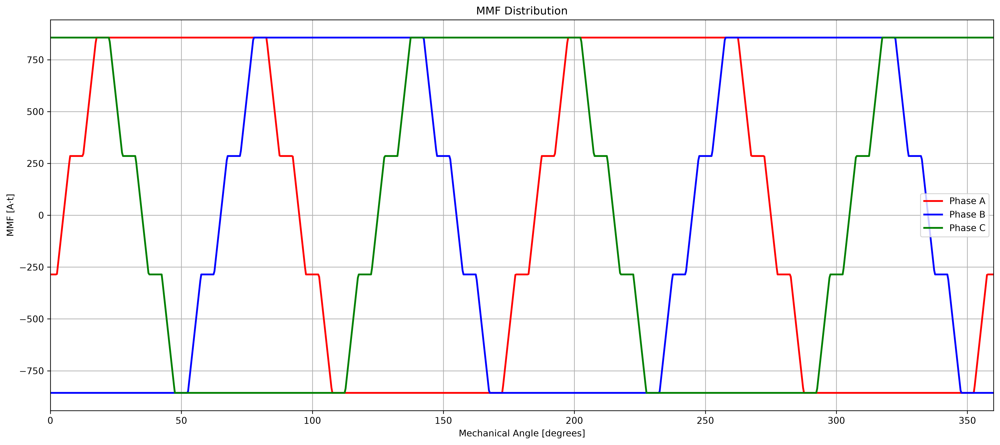
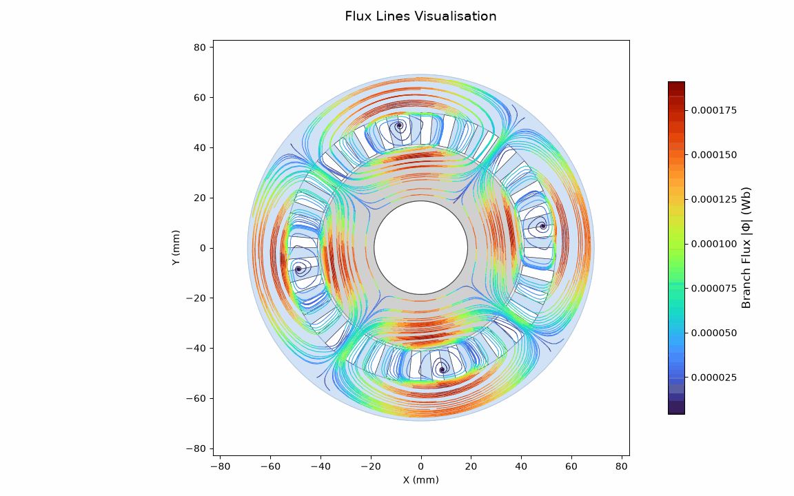

Du placement des bobines au champFrom coil placement to field
Le dimensionnement d’une machine exige de garder cohérents géométrie, connexions triphasées et grandeurs magnétiques. L’application permet d’explorer cette chaîne dans une même interface.Machine design requires geometry, three-phase connections and magnetic quantities to remain consistent. The application lets users explore that chain in one interface.
Dans ce projet d’équipe, nous avons développé une application de bureau en Python et PyQt5. Elle commence par la configuration en encoches, pôles, couches et pas de bobinage ; elle calcule la faisabilité, les facteurs de bobinage et la matrice des connexions de phases.In this team project, we developed a Python/PyQt5 desktop application. It begins with slots, poles, layers and coil pitch; it computes feasibility, winding factors and the phase-connection matrix.
Un dessin du stator et des contrôles interactifs évitent de traiter le bobinage comme une simple ligne de nombres. Les paramètres se transmettent aux vues FMM et flux pour que les calculs gardent la même machine de référence.A stator drawing and interactive controls keep the winding from becoming just a row of numbers. Parameters carry into MMF and flux views so the calculations use the same machine.
- BobinageWinding
Configuration et vérification de faisabilité.Configuration and feasibility checks.
- ConnexionsConnections
Matrice phase–encoche et représentation du stator.Phase–slot matrix and stator view.
- CohérenceConsistency
Paramètres synchronisés entre les trois espaces.Parameters shared across all three workspaces.
Voir la FMM avant de résoudre le fluxSee MMF before solving flux
La deuxième vue calcule les profils de force magnétomotrice dent par dent pour chaque phase et leur résultante, en fonction de l’angle électrique.The second view computes tooth-based magnetomotive-force profiles for each phase and their resultant versus electrical angle.
Le moteur de calcul sépare les profils de phase de la combinaison temporelle. L’utilisateur peut examiner la matrice de connexion, faire varier l’angle et animer la résultante ; cela rend visibles les effets du schéma de bobinage.The calculation engine separates phase profiles from their time-dependent combination. Users can inspect the connection matrix, vary angle and animate the resultant, making winding choices visible.
La troisième vue guide ensuite la définition de la machine, la génération d’un maillage polaire à quatre régions et le calcul de densité de flux. Un réseau de réluctances et un solveur creux produisent des cartes de densité et des lignes de flux.The third view then guides machine setup, a four-region polar mesh and flux-density calculation. A reluctance network and sparse solver produce density maps and flux lines.
- FMMMMF
Profils par phase et résultante interactive.Per-phase profiles and interactive resultant.
- MaillageMesh
Géométrie polaire organisée en quatre régions.Polar geometry divided into four regions.
- SolveurSolver
Réseau de réluctances puis visualisation du flux.Reluctance network followed by flux visualisation.

Comparer et interpréterCompare and interpret
Les cartes de densité et lignes de flux rendent le résultat inspectable. Une voie optionnelle relie l’étude au solveur éléments finis FEMM pour une comparaison indépendante.Density maps and flux lines make the result inspectable. An optional path links the study to FEMM finite-element analysis for independent comparison.
Les figures du dépôt montrent plusieurs configurations, notamment des bobinages simple et double couche. L’interface distingue ce qui relève du calcul de bobinage, de la FMM et du flux ; cette séparation aide à localiser une incohérence.Repository figures show several configurations, including single- and double-layer windings. The interface separates winding, MMF and flux calculations, which helps locate inconsistencies.
La comparaison FEMM sert de contrôle numérique, pas d’essai sur prototype physique. Le dossier fournit le code de l’application et les images de référence, avec FEMM en dépendance optionnelle pour les vérifications finies.FEMM comparison is a numerical check, not a physical prototype test. The repository contains application code and reference images, with FEMM optional for finite-element checks.

Ce que relie l’applicationWhat the application connects
Le projet transforme une suite de calculs de machine en parcours exploratoire : saisir, visualiser, calculer, confronter.The project turns a sequence of machine calculations into an exploratory path: enter, visualise, calculate, compare.
Il reste un outil de conception et d’analyse numérique. Les résultats doivent être interprétés dans les hypothèses du réseau de réluctances et de la géométrie choisie ; un essai expérimental demanderait un dispositif et des mesures supplémentaires.It remains a numerical design and analysis tool. Results must be interpreted within the chosen geometry and reluctance-network assumptions; experimental validation would require hardware and measurements.